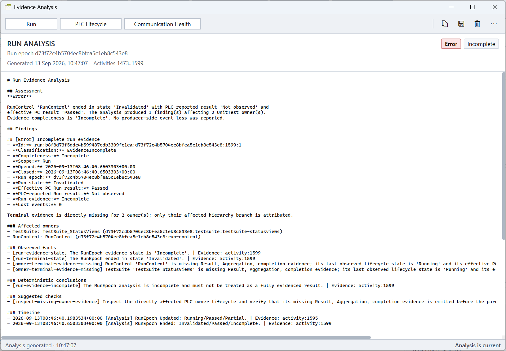

Purpose
Evidence analysis helps identify PLC-side UnitTest implementation and lifecycle problems without manually reading the complete event stream. It evaluates retained structured application and PLC evidence only when requested and does not change workflow, PLC, or EventBuffer state.
Open an analysis
Use View > Analyze Current Run..., Analyze PLC Lifecycle..., or Analyze Communication Health.... The Run Result header opens the current Run analysis directly. A selected diagnostic can open the most closely correlated analysis through its Analyze action or context menu.
One modeless Evidence Analysis window is reused. Its toolbar switches analysis type, refreshes the displayed report, and provides Copy, Export, Clear, and log access. The heading identifies which analysis is currently displayed.


Analysis types
- Run Analysis
- Examines one RunEpoch, its RunControl, Suites, TestCases, assertions, result propagation, completeness, and relevant PLC event trace.
- PLC Lifecycle Analysis
- Examines the latest correlated startup, Start, Reset, Abort, or PLC-reaction window and highlights owners or expected reactions involved in a lifecycle problem.
- Communication Health Analysis
- Examines communication and revalidation state, EventStream integrity, sequence gaps, lost events, and EventBuffer progress within the retained communication-health window.
Read and refresh the report
The header shows focus, assessment, completeness, generation time, and activity range. The report separates observed facts, conclusions, suggested checks, and the retained activity trace. Suggested checks point to useful PLC integration locations; they do not claim knowledge of unobserved PLC-internal causes.
The footer indicates whether the displayed immutable snapshot is current, whether relevant evidence arrived after generation, or whether the report belongs to a previous session. Application activity can make a displayed report stale; run the selected analysis again to create a new snapshot.
Copy, export, and clear
Copy copies the displayed summary. Export writes one ZIP package from the same immutable snapshot. The package contains analysis.md, optional Run hierarchy.json, and ordered events.ndjson for deeper or automated diagnosis.
Clear removes the visible report. A completed retained trace is cleared with it; active capture continues. Clearing an analysis does not change workflow state, gates, logs, Run Results, or artifacts.